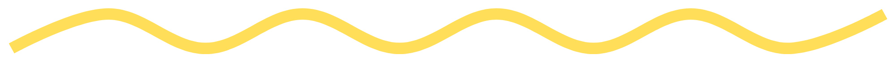
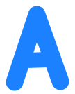
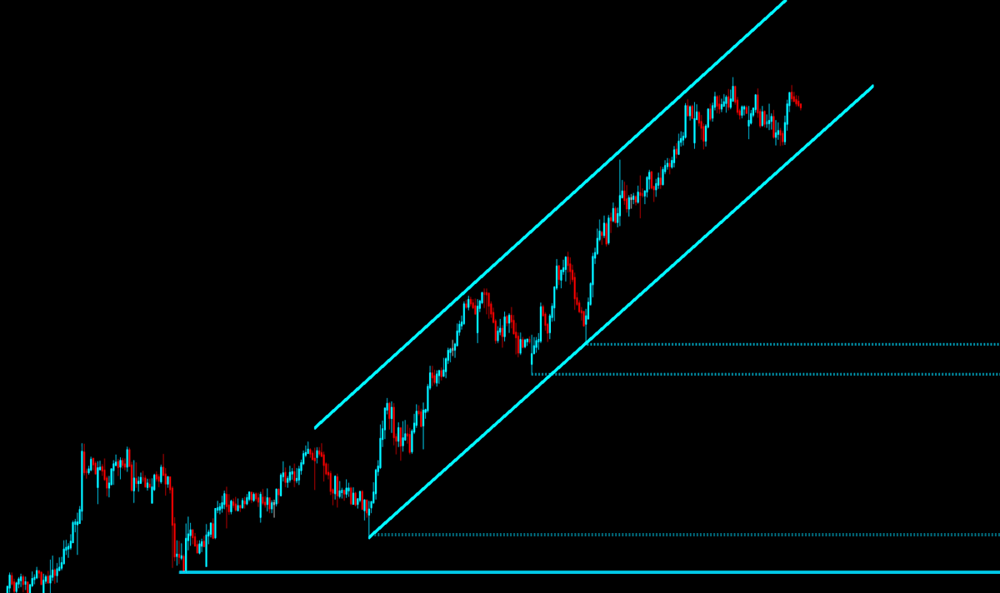
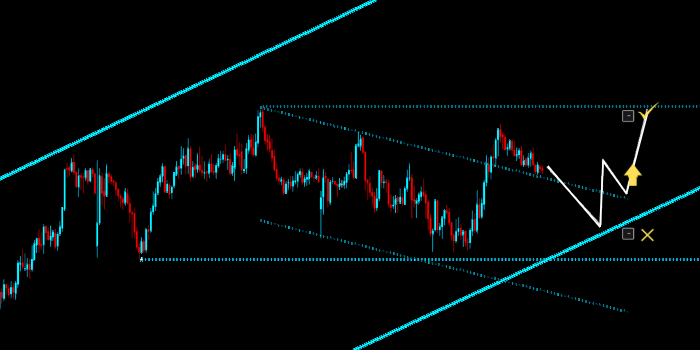
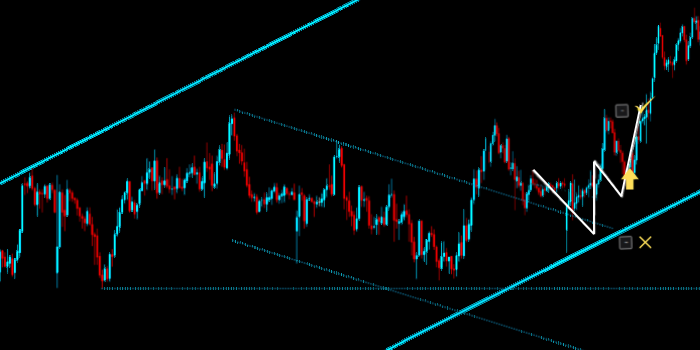
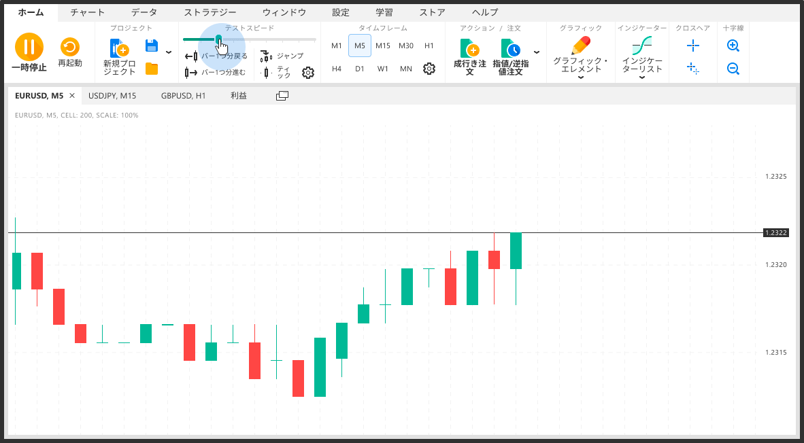
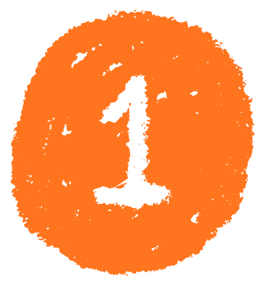
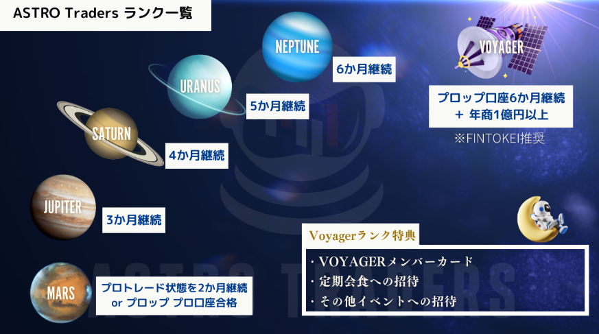

プロトレーダーになるための
最短ルート
やることはシンプル。
実力をつけて、資金を大きくして、プロへ。

やることはシンプル。
実力をつけて、資金を大きくして、プロへ。
 全体マップ
全体マップ


まずはこの図で全体像を。詳しくは下に続きます。

ライン画像をタップして拡大
選ぶと、あなたのルートの詳細だけが表示されます。
あとからいつでも切り替えられます。
王道ルート
動画で学び、答え合わせで合格していく5ステップ。


シナリオ通りに動いたら、M5でエントリー／イグジット。お手本トレード（ピンク印）と答え合わせします。
合格1週間を通して正答率90%以上

過去の相場を巻き戻して、何度もトレードを練習・検証します。おすすめはForex Tester Online（FTO）。
合格〇率90%・月利8%・DD10%以内を6か月連続

 本気で変わりたい方へ
本気で変わりたい方へ

よすがの直接指導のもと3か月間猛特訓。
経験ゼロからプロトレーダーレベルの実力を目指す育成プログラム。
Yカリキュラム7段階を拡張した実戦カリキュラム。
各ステージをクリアしないと次に進めない。
チャートの読み方・基礎知識を固める
ライン引きの技術を習得する
過去相場においてシナリオ構築を行う
理想の値動きシナリオを描けるようになる
現実の値動きに対応するスキルを身につける
デモトレードで実践力を検証する
リアルトレードで結果を出す — ゴールへ
シナリオを立て、提出し、添削を受け、認識をアップデートする。
このサイクルをほぼ隔日で回し続ける。
チャートを読み解き、根拠のある仮説を立てる
フォーマットに沿ってDiscordに課題を投稿
よすがが動画であなたの課題を徹底分析・指導
指摘を反映して自分の考え方を再構築する
ステージごとの課題チャンネルに提出 → 翌日、よすがが全員分をまとめて動画で添削。
添削動画は専用チャンネルにアップされる。
課題と一緒に質問も投稿でき、よすがが添削動画内で回答してくれる。

ステージごとのチャンネルにチャートとシナリオを投稿


よすがが全員分をまとめて動画で徹底指導


添削だけじゃない。ライブ配信、質問、仲間との交流で
孤独な独学とは真逆の環境で成長できる。

※ 応募多数の場合は選定・抽選となります。次回募集はDiscordの「ゼロプロ90」にてお知らせ。
ゼロプロ90の詳細を見る → 仮想資金で挑戦
仮想資金で挑戦

Fintokeiのおすすめのプランは、この2つ。

テストあり・高い取り分
2段階テストに合格して仮想資金提供。テストは最短1週間。
資金 200万〜5000万／取り分 80%
Fintokei →初めて購入の方 30ysg → 30%OFF
2回目以降の方 FINTO5KEI → 5%OFF
ゴール

プロの最高峰 VOYAGER を目指そう
ずっと使う
この2つは、ゴールまでずっと一緒です。
困ったら
FXに関するあらゆる質問を受付。
※個人情報・外部情報の持ち込みは禁止です。